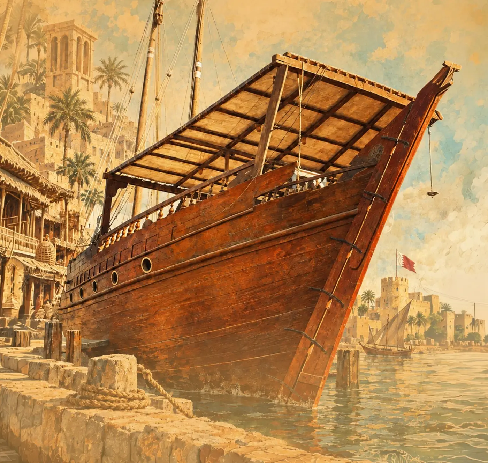
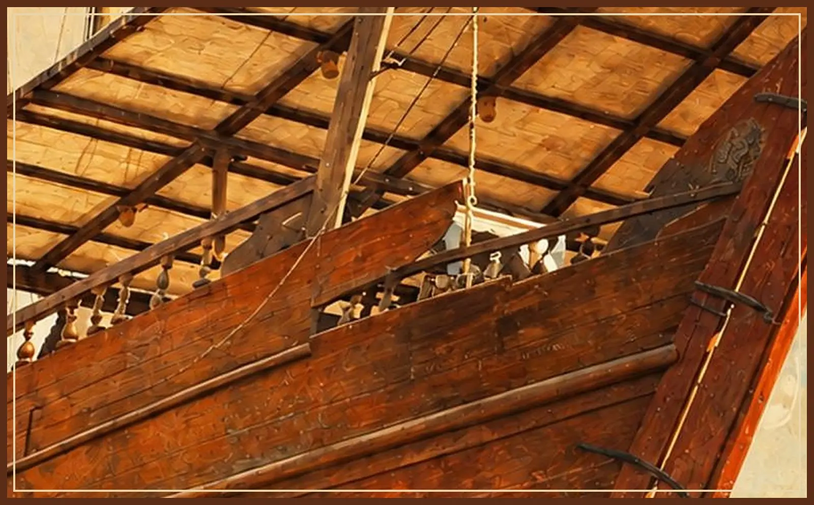
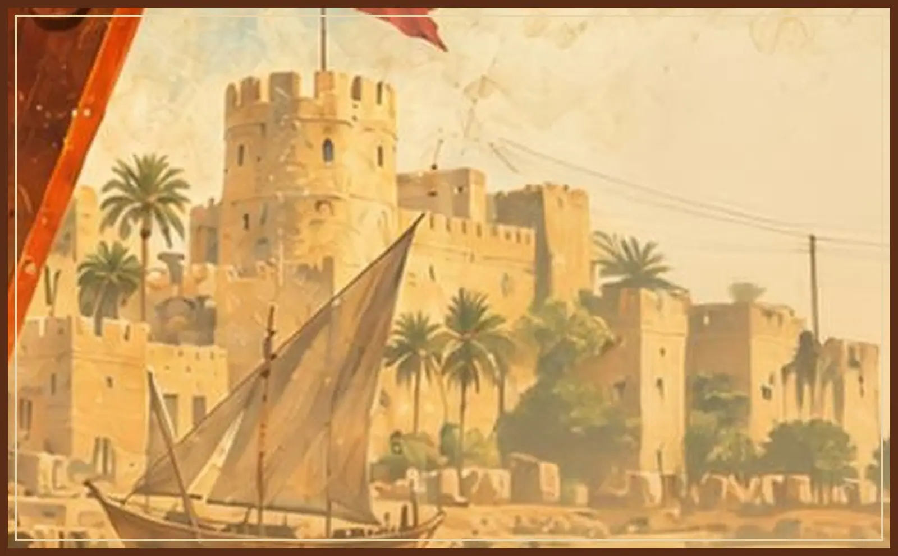
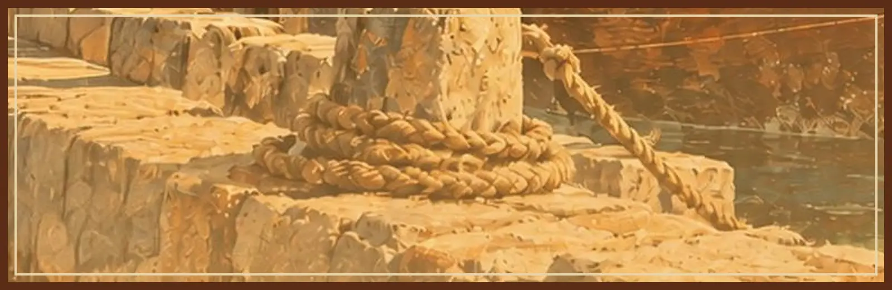
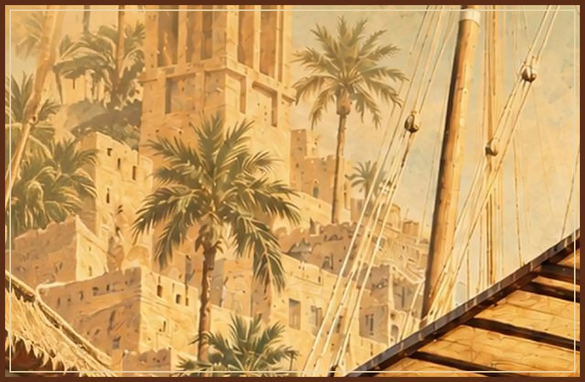
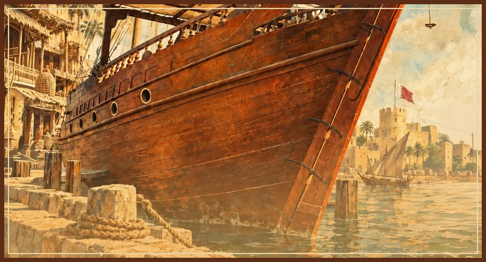
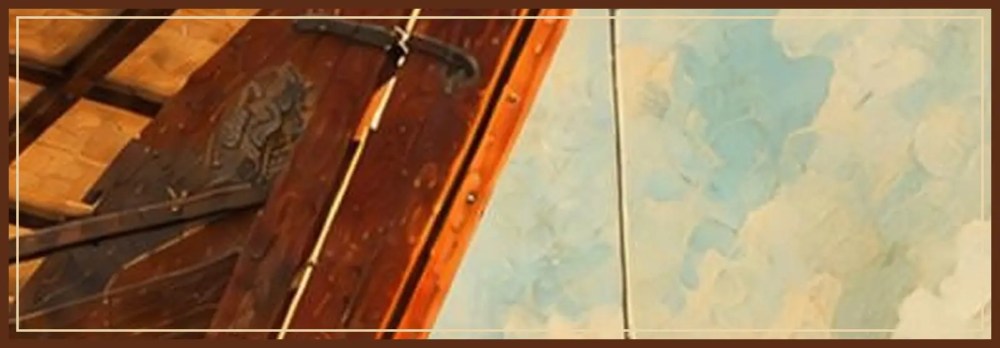

1
تشكيل فريق إدارة المشروع
المدة: شهرفريق عمل واضح الهيكل وخطة زمنية أولية لإدارة المشروع.
النعيم… بوابة المنامة إلى الذاكرة والتراث
دراسة ومقترح تأسيسي · كتابة وإعداد عمار أحمد النشابة

من الذاكرة المتناثرة إلى أيقونة ثقافية للبحرين
لم تكن فكرة إعداد مشروع إنشاء مركز النعيم الثقافي والتراثي مجرد فكرة لإنشاء موقع يحتضن التراث، وإنما جاءت نتيجة قناعة راسخة بأن وراء كل حي من أحياء البحرين تاريخاً إنسانياً عميقاً، ووراء كل أسرة وبيت ومهنة وشخصية حكاية تستحق أن تعرف وتوثق.
فالنعيم جزء من ذاكرة المنامة، ومكوّن من مكونات التجربة البحرينية التي تشكلت عبر أجيال من العمل والبحر والتجارة والحرف والعلم والثقافة والفنون والتكافل الاجتماعي.
النعيم ليست مجرد مكان نروي تاريخه، وإنما ذاكرة نعيد اكتشافها، وهوية نصونها، ومستقبل ثقافي نشارك في بنائه.
لوحات تعبيرية من الدراسة






من الشراكة المجتمعية إلى التنفيذ
يقوم إعداد المشروع على مبدأ الشراكة المجتمعية في صناعته، بحيث لا يقتصر التخطيط على رؤية إدارية أو هندسية مسبقة، وإنما يتم إشراك مختلف أطياف المجتمع وأصحاب الخبرات والمهتمين بتاريخ النعيم وتراثها وفنونها في بلورة هوية المركز ومكوناته وبرامجه.
وتنطلق هذه المنهجية من أهمية الاستماع إلى أصحاب الاختصاص والممارسين أنفسهم:
وبذلك يصبح المشروع نتاجاً لرؤية مجتمعية مشتركة، تجمع بين ذاكرة الماضي واحتياجات الحاضر وطموحات المستقبل.
فريق عمل واضح الهيكل وخطة زمنية أولية لإدارة المشروع.
قاعدة بيانات لسبع دوائر: أهل الذاكرة، البحر، الفنون البصرية، العمارة، الأدب، الحرف، والشباب.
سبعة لقاءات متخصصة، لكل محور لقاء مع أصحاب الخبرة فيه. تجدها مربوطة بأقسامها في مخطط المعرض.
بطاقة عمل موحدة لكل قسم: المحتوى، المقتنيات، المساحة، التجهيزات، البرامج، الموارد البشرية، الشراكات، الاستدامة، والأولويات.
ثمانية أقسام مقترحة، تراها على مخطط المعرض أدناه.
وثيقة تأسيسية من 13 بنداً: الرؤية والرسالة والأهداف والهوية والأقسام والبرامج والشراكات والتصور المالي ومؤشرات النجاح.
التصميم الهندسي يأتي نتيجة لاحتياجات المشروع لا سابقاً عليها، ويُفضَّل إعداد أكثر من تصور بحسب الموقع.
بالتوازي مع مراحل الدراسة يبدأ التواصل مع الجهات المحتمل مساهمتها في المشروع. والهدف تحويله إلى مشروع مجتمعي تشاركي واسع، لا مبادرة معزولة.
لا يشترط انتظار اكتمال المبنى لبدء المشروع؛ يمكن إطلاقه تدريجياً:
جمع الصور والوثائق والروايات والمقتنيات.
تنظيم ندوات ومعارض وورش مؤقتة.
توثيق المحتوى وحفظه إلكترونياً.
لإشراك المجتمع وتعريف الجمهور بالمشروع.
بعد اكتمال الدراسات والتصورات والشراكات والدعم.
ثمانية أقسام حول ساحة مفتوحة. اضغط على أي قسم لترى محتواه ولقاءه التشاوري ومن يرتبط به من المدعوين، أو ابدأ جولة الزائر.
المخطط تصوّر توضيحي لترتيب الأقسام فقط. المساحات والمواقع الفعلية تُحدَّد في المرحلة السابعة بعد دراسة احتياجات كل قسم، كما تنص الدراسة.
لا نبني مبنى ثم نبحث له عن محتوى، بل نبني أولاً رؤية ومحتوى وهوية بالشراكة مع المجتمع، ثم نصمم المكان القادر على احتضانها.
وهذا المبدأ يمثل جوهر المشروع، إذ إن قيمته الحقيقية لن تكون في المبنى وحده، وإنما في الإنسان والذاكرة والخبرة والموروث الثقافي الذي سيحتضنه، وفي قدرة المجتمع على المشاركة في صناعته واستدامته.
الكفاءات المدعوة وأدوارها المقترحة وأثر حضورها
إن اختيار الشخصيات المدعوة إلى اللقاء التأسيسي لا يقوم على الحضور الشرفي أو المجاملة، وإنما ينطلق من الرغبة في جمع كفاءات ذات حضور فاعل في المجتمع البحريني، وبالأخص ممن لهم ارتباط مباشر أو غير مباشر بمنطقة النعيم، أو يمتلكون خبرات يمكن أن تسهم في بناء هذا المشروع وبلورة مكوناته.
فالمشروع في هذه المرحلة لا يحتاج فقط إلى من يستمع إلى فكرته، بل إلى شخصيات تستطيع أن تضيف إليها من خبرتها وعلاقاتها ومعرفتها وحضورها المجتمعي، وأن تساعد في الانتقال بها من فكرة ثقافية وتراثية إلى مشروع مؤسسي قابل للتنفيذ.
ليست النعيم مجرد حي من أحياء المنامة، بل مساحة من الذاكرة البحرينية؛ كانت في مراحل مختلفة بوابة للمنامة، يمر عبرها الناس، وتلتقي فيها مسارات أهل البحر وأصحاب الحرف والتجار والمثقفين.
ومن هنا جاءت فكرة المركز: ذاكرة حية للنعيم، ومجال مفتوح للتوثيق والبحث والتعليم والعرض والفنون، يتجاوز مفهوم المتحف التقليدي.
ربما تكون صورة قديمة شاهداً على مرحلة لا تزال بحاجة إلى التوثيق.
حرّك الضوء لتكشف اللوحةربما تكون معلومة يحتفظ بها أحد كبار السن مفتاحاً لاكتشاف جانب من تاريخ المنطقة، وربما تكون حرفة أو تجربة شخصية حلقة مفقودة في قصة أكبر تستحق أن تروى.
بعض ما نريد توثيقه يعيش اليوم في ذاكرة أشخاص تقدم بهم العمر، وبعض المقتنيات قد تضيع إن لم نبادر إلى جمعها. فالمبادرة اليوم مسؤولية تجاه الذاكرة والأجيال القادمة.
فالتراث الذي نحييه اليوم هو الرسالة التي نتركها لأبنائنا غداً.
دعوة لحضور المؤتمر التأسيسي لمشروع مركز النعيم الثقافي والتراثي
السلام عليكم ورحمة الله وبركاته،،،
الأخ الكريم / الأخت الكريمة المحترم/ة،،
التعريف بالشخصية:
يسرنا دعوتكم للمشاركة في المؤتمر التأسيسي لمشروع مركز النعيم الثقافي والتراثي، الذي يأتي انطلاقاً من الرغبة في حفظ وتوثيق الموروث التاريخي والثقافي والاجتماعي لمنطقة النعيم، وإبرازه بصورة تليق بتاريخها وإسهامات أهلها في مسيرة البحرين.
وقد حظيت فكرة المشروع بموافقة على تبنيها ورعايتها في مرحلتها التأسيسية، باعتباره المظلة المؤسسية التي يمكن أن تجمع الجهود والخبرات، وتدعم التنسيق بين أصحاب الشأن والاختصاص، وصولاً إلى بلورة مشروع ثقافي وتراثي يقوم على أسس معرفية ومجتمعية واضحة.
إن مشروع مركز النعيم الثقافي والتراثي لا يمكن أن يُبنى من تصور فردي أو من خلال جهة واحدة، بل يحتاج إلى مشاركة أصحاب الخبرة والمعرفة، وأبناء المنطقة الذين يحملون في ذاكرتهم تاريخها وتجاربها وموروثها.
ومن هذا المنطلق، تأتي دعوتكم باعتباركم من أصحاب الشأن أو الخبرة أو الاهتمام الذين يمكن أن يسهموا في إثراء المشروع برؤاهم ومعلوماتهم ومقترحاتهم وعلاقاتهم، والمساعدة في تحديد مكوناته وأولوياته وسبل تطويره.
تشمل دائرة المشاركة، على سبيل المثال لا الحصر:
يهدف اللقاء إلى فتح حوار أولي ومنظم حول المشروع، من خلال:
نؤكد أن هذا المؤتمر لا يأتي لعرض مشروع مكتمل أو طرح تصور نهائي جاهز للاعتماد، وإنما يمثل الخطوة الأولى في مسار تشاوري وتأسيسي نطمح من خلاله إلى جمع المعرفة بالذاكرة، والخبرة بالممارسة، والشباب بأصحاب الاختصاص.
فالمقصود ليس إنشاء مبنى ثم البحث عن محتوى له، بل العمل أولاً على تحديد هوية المشروع ومحتواه واحتياجاته، ثم دراسة المكان والبرامج والشراكات والموارد التي تمكنه من أداء رسالته.
ونطمح إلى أن يكون المركز مستقبلاً ذاكرة حية للنعيم، ومساحة للبحث والتوثيق والتعلم والإبداع، ومنصة تجمع الأجيال، وتمنح الشباب دوراً حقيقياً في حفظ تراث منطقتهم وتقديمه بصورة معاصرة.
إن حضوركم لا يمثل مشاركة بروتوكولية، بل نأمل أن يكون إسهاماً عملياً في مرحلة التأسيس، من خلال ما تحملونه من خبرات وتجارب وذكريات ومعلومات وعلاقات يمكن أن تساعد في بناء المشروع على أسس راسخة.
فكل صورة قد توثق مرحلة، وكل وثيقة قد تحفظ معلومة، وكل رواية قد تنقل جانباً من الذاكرة، وكل حرفة قد تحمل تاريخاً، وكل فكرة قد تفتح مجالاً جديداً أمام المشروع.
كما أن اجتماع هذه الكفاءات والشخصيات من أبناء النعيم وأصحاب الاختصاص من شأنه أن يعزز فرص التنسيق والتعاون، ويفتح قنوات التواصل مع الأفراد والمؤسسات والجهات التي يمكن أن تسهم في دعم المشروع وتطويره في مراحله القادمة.
إننا نتطلع إلى أن يكون هذا المؤتمر بداية لشراكة مجتمعية واسعة، تجمع أبناء النعيم وأصحاب الخبرة والمعرفة، وتسهم في تأسيس مشروع يحفظ موروث المنطقة، ويبرز إسهامات أهلها، ويمنح الأجيال القادمة فرصة التعرف على تاريخهم والاعتزاز به والمشاركة في تطويره.
وإذ نتشرف بدعوتكم، فإننا نأمل أن تحظى الدعوة باهتمامكم، وأن نلتقي بكم للاستفادة من رؤاكم وتوجيهاتكم ومقترحاتكم، والمشاركة معاً في وضع اللبنات الأولى لهذا المشروع.
فالمشروع يبدأ بفكرة، ويكبر بالمشاركة، ويستمر بالعمل المؤسسي، ويترك أثره حين يصبح إرثاً مشتركاً للأجيال.
وتفضلوا بقبول خالص التقدير والاحترام،،،